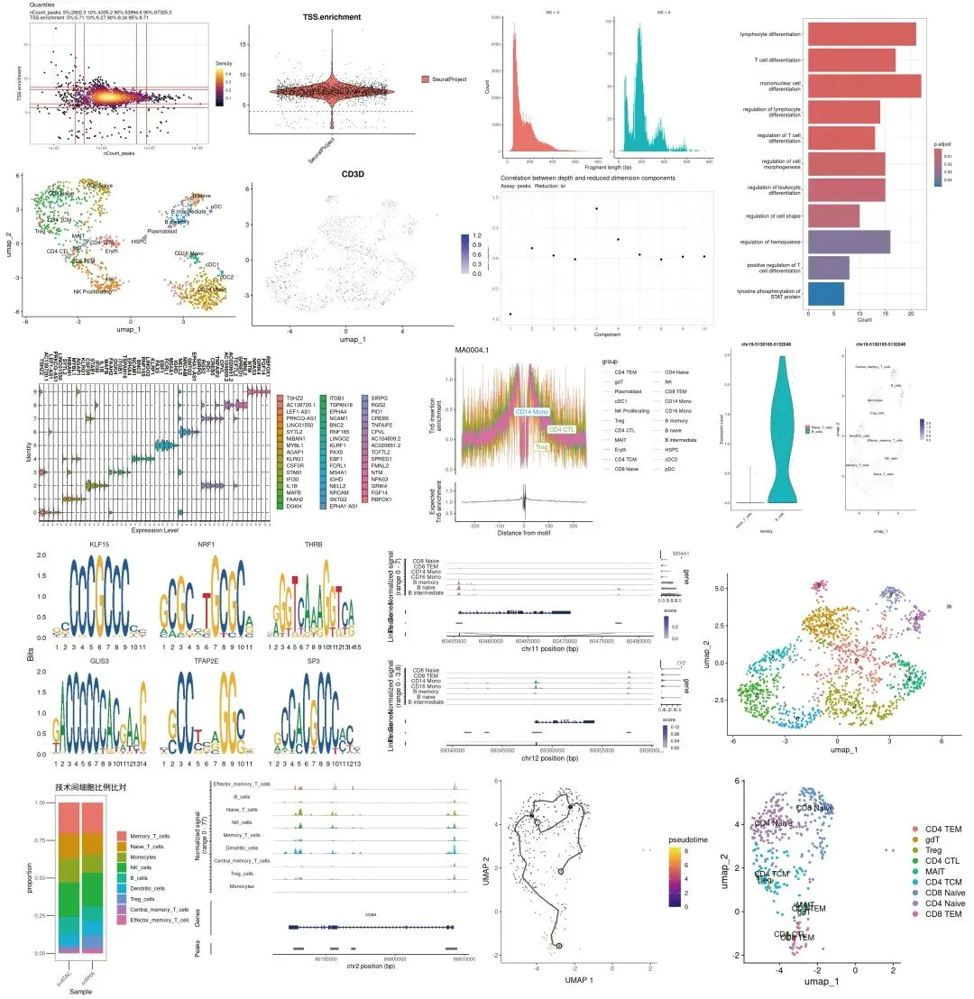
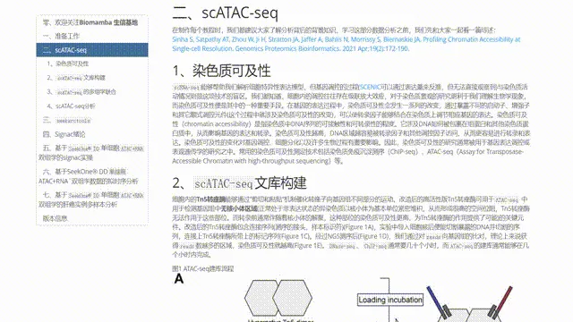
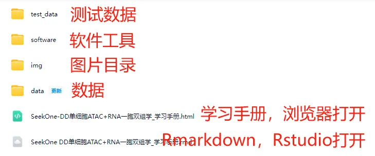

视频+4.6w字长文| 一次性学会SeekOne®-DD单细胞ATAC+RNA一胞双组
原文：https://mp.weixin.qq.com/s?__biz=MzAwMzIzOTk5OQ==&mid=2247539550&idx=2&sn=d440316010e7d8fe3b8129f74df53bfe&chksm=9b3c220eac4bab1820db165c52ca6e04a70cf9137efb89da5ea7a364b7d2b5d63920afbfe797#rd 合集：单细胞教程全收录
一、 SeekOne®-DD单细胞ATAC+RNA一胞双组学
染色质可及性（chromatin accessibility）是指染色质中DNA序列的可接触性和可转录性的程度。它涉及DNA如何被包裹在组蛋白和其他染色质蛋白质中，从而影响基因的表达和转录。染色质可及性越高，DNA区域越容易被转录因子和其他调控因子访问，从而更容易进行转录和表达。染色质可及性的变化对基因调控、细胞分化以及许多生物过程有重要影响。 scRNA-seq能够帮助我们解析细胞特异性表达模型，但基因调控的过程与染色质活动情况则是这项技术的盲区。对于染色质景观的研究更利于我们理解生物学现象，而染色质可及性便是其中的一种重要手段。在基因的表达过程中，染色质可及性会发生一系列的改变，通过暴露不同的启动子、增强子和其它顺式调控元件，可以使转录因子能够结合在染色质上调节相应基因的表达。因此，染色质可及性的研究通常被用于基因表达调控或表观遗传学的研究之中。 SeekOne® DD 单细胞 ATAC + RNA解决方案的核心优势在于其独特的“一胞双组”技术。它能够在同一细胞中同时检测染色质可及性和基因表达，实现了真正意义上的单细胞双组学分析。详细介绍可参考：一份样本变两份数据：单细胞 ATAC+RNA 多组学解决方案。针对这一技术，我们整理了4.6w字长文的学习手册，带领大家一起从准备工作、scATA-seq绪论、seekarctools定量、
基于SeekOne® DD单细胞ATAC+RNA双组学的signac实操、基于SeekOne® DD单细胞ATAC+RNA`双组学数据的拟时序分析、基于SeekOne® DD单细胞ATAC+RNA双组学的肝癌实例多样本分析等章节完成SeekOne® DD 单细胞 ATAC + RNA一胞双组学的一站式学习。
教程图片集锦

学习手册与测试文件已经替大家打包好啦，添加客服微信[Biomamba_zhushou]回复关键字"SeekOne®-DD单细胞ATAC+RNA一胞双组学"即领提取码:
通过网盘分享的文件：
SeekOne®-DD单细胞ATAC+RNA一胞双组学-学习手册
下载链接: https://pan.baidu.com/s/1k0KorRBQwSzQn9rwD6HlEQ?
本教程基于Linux中的Rstudio环境演示，计算资源不足的同学可参考：足够支持你完成硕博生涯的生信环境
二、学习手册
和以前一样，我们给大家准备了学习手册和测试文件，所见即所得

教程目录：一、准备工作
1、编程基础
2、硬件基础
3、生信基础
二、scATAC-seq
1、染色质可及性
2、scATAC-seq文库构建
3、scATAC-seq的多组学联合
4、scATAC-seq分析
三、seekarctools
3.1 软件下载
3.2 软件安装
3.3 软件分析逻辑
3.4 测试数据
3.5 参数介绍
3.6 常见用法
3.7 参数调整
四、Signac绪论
1、PBMC演示数据
2、评估scATAC中的降维方法
3、DNA 可及性和线粒体基因型的联合分析
4、scATAC分析的扩展
5、讨论
五、基于SeekOne® DD单细胞ATAC+RNA双组学的signac实操
1、signac基本流程
1.1 数据读取
1.2 基因信息注释
1.3 质量控制
1.4 peaks矩阵的标准化与降维分群
1.5 基因活性矩阵处理
1.6 与单细胞数据整合
1.7 差异可及性peaks计算
1.8 展示特定基因组区域的peaks
2、与scRNA的联合分析
2.1 数据载入
2.2 添加ATAC注释
2.3 质量控制
2.4 scRNA矩阵处理
2.5 scATAC矩阵处理
2.6 细胞类型注释
2.7 scATAC与scRNA的交互
3、常见可视化
3.1 数据载入
3.2 基因注释
3.3 CoveragePlot
3.4 peaks可视化
3.5LinkPlot
3.6 TilePlot
3.7 表达量绘制
3.8 拼图
3.9 一步可视化
4.motif分析
4.1 motif过表达及差异分析
4.2 转录因子足迹
5 共可及性网络构建
5.1 载入数据
5.2 构建Cicero对象
5.3 Cicero连接性计算
5.4 顺式可及性网络构建
六、基于SeekOne® DD单细胞ATAC+RNA`双组学数据的拟时序分析
1 创建cell_data_set
2 拟时序分析
七、基于SeekOne® DD单细胞ATAC+RNA双组学的肝癌实例多样本分析
7.1 定量
7.2 数据读取
(1)加载R包
(2)peaks区域合并
(3)构建fragment对象
(4)生成peaksXcell的文件
(5)创建Seurat对象
(6)整合对象
(7)加入RNA表达矩阵
7.3 基因注释
7.4 质控、过滤
7.5 peaks矩阵的标准化与降维分群
7.6 降维、分群、注释
(1)基于ATAC矩阵的降维分群
(2)基于RNA矩阵的降维分群
(3)真正的RNA矩阵分群
7.7 motif分析
7.7.1 motif过表达及差异分析
7.7.2 转录因子足迹
7.8 共可及性网络构建
(1) 加载依赖包
(2)构建Cicero对象
(3)Cicero连接性计算
(4)顺式可及性网络构建
7.9 拟时序分析
(1) 创建cell_data_set
(2) 拟时序分析
三、测试文件
文件目录：
./
├── count.log
├── count.sh
├── cpuinfo.sh
├── data
│ ├── GRCh38
│ ├── HBV
│ ├── packages
│ ├── pbmc_multimodal.h5seurat
│ ├── refdata-arc-GRCh38.tar.gz
│ ├── refdata-arc-GRCm38.tar.gz
│ └── scATAC_test_fastq
├── HBV_count.sh
├── img
│ ├── ascp project.jpg
│ ├── black_list.jpg
│ ├── ebi_download.jpg
│ ├── environment.jpg
│ ├── fastq_name.jpg
│ ├── Figure 2.jpg
│ ├── Figure 4.jpg
│ ├── Figure 5.jpg
│ ├── merge_strategy.jpg
│ ├── PRJNA660027.jpg
│ ├── Rmarkdown开头2023.09.png
│ ├── Rmarkdown开头2025.jpg
│ ├── scATAC_library.jpg
│ ├── signac Figure 2.jpg
│ ├── signac Figure 3.jpg
│ ├── signac Figure 4.jpg
│ ├── signac Figure S1.jpg
│ ├── signac Figure S2.jpg
│ ├── signac Figure S4.jpg
│ ├── signac Figure S6.jpg
│ ├── UMI矫正示意图.jpg
│ ├── 版本号.jpg
│ └── 转录组文库结构.jpg
├── seek_ATAC.rmd
├── SeekOne-DD单细胞ATAC+RNA一胞双组学-学习手册_files
│ └── figure-html
├── SeekOne®-DD单细胞ATAC+RNA一胞双组学-学习手册_files
│ └── figure-html
├── SeekOne-DD单细胞ATAC+RNA一胞双组学_学习手册.html
├── SeekOne-DD单细胞ATAC+RNA一胞双组学-学习手册.rmd
├── software
│ ├── annotation
│ ├── bin
│ ├── cmake
│ ├── compiler_compat
│ ├── conda-meta
│ ├── etc
│ ├── fonts
│ ├── include
│ ├── lib
│ ├── libexec
│ ├── man
│ ├── sbin
│ ├── seekarctools_v1.0.0.tar.gz
│ ├── share
│ ├── ssl
│ ├── var
│ ├── x86_64-conda_cos6-linux-gnu
│ └── x86_64-conda-linux-gnu
├── test_data
│ ├── combined_bfQC.rds
│ ├── combined_sub.rds
│ ├── HBV250213C.log
│ ├── HBV250213C_output
│ ├── HBV250213N.log
│ ├── HBV250213N_output
│ ├── scATAC.rds
│ ├── scATAC_rename.rds
│ ├── scRNA_rename.rds
│ ├── seekgene_multiomics.rds
│ └── WTSH810_output
└── three_sample.sh
11120 directories, 103350 files

所有测试文件与工程文件约700GB，大家注意按需下载，可以做到对应步骤时下载对应文件
如何联系我们

 留一个领取资料、开箱即用的单细胞分析镜像的微信号[Biomamba_zhushou]，方便各位随时交流。同时我们也构建了交流群矩阵，欢迎大家入群讨论。
大家可以阅读完这几篇之后添加给生信入门初学者的小贴士
没有检索，就没有发言权
留一个领取资料、开箱即用的单细胞分析镜像的微信号[Biomamba_zhushou]，方便各位随时交流。同时我们也构建了交流群矩阵，欢迎大家入群讨论。
大家可以阅读完这几篇之后添加给生信入门初学者的小贴士
没有检索，就没有发言权
已有生信基地联系方式的同学无需重复添加

 您点的每个赞和在看，我都认真当成了喜欢
您点的每个赞和在看，我都认真当成了喜欢